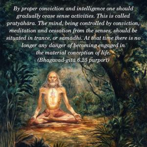
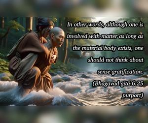

Gradually, step by step, one should become situated in trance by means of intelligence sustained by full conviction, and thus the mind should be fixed on the Self alone and should think of nothing else.


By proper conviction and intelligence one should gradually cease sense activities. This is called pratyāhāra. The mind, being controlled by conviction, meditation and cessation from the senses, should be situated in trance, or samādhi. At that time there is no longer any danger of becoming engaged in the material conception of life. In other words, although one is involved with matter as long as the material body exists, one should not think about sense gratification. One should think of no pleasure aside from the pleasure of the Supreme Self. This state is easily attained by directly practicing Kṛṣṇa consciousness.